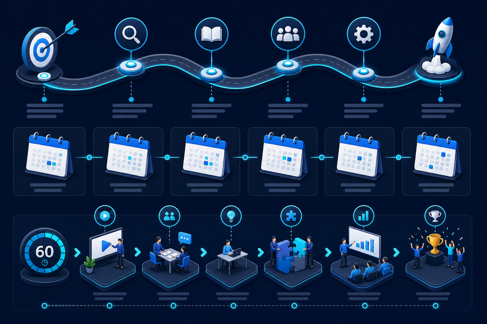

讲师：曹鑫淼
墨典网络
AI + 本地生活场景落地
培训进度
1 / 17
当前页有未确认的修改
Training · 2026 · v2
生成式 AI 商业应用培训
从认知到岗位应用 · 基础篇 + 传统外贸全员实践
约 1 小时 · 互动课件
Speaker
讲师介绍 · 曹鑫淼
AI 产品与应用落地 · 本地生活数字化 · 数据中台
2019 – 2022 · 阿里巴巴 · 本地生活 · 宁波数据中台
参与区域数据体系建设与运营分析；实践指标口径统一、报表自动化与业务自助取数；将数据结论转化为选品、活动、商户运营等可执行动作。
2023 – 2026 · 字节跳动 · 本地生活 · 宁波区域负责人
负责宁波区域策略、商户拓展与增长目标；深度参与团购、到店、直播与服务商协作；推动线上流量与线下履约衔接，关注 SOP 与标准化复制。
2026 年 6 月 – 至今 · 墨典网络 · 创始人
主导 AI + 本地生活场景融入：智能客服、营销内容生成、经营分析助手、商户培训与 SOP；坚持「AI 起草、人工审核、小步试点、KPI 验证」。
AI 不是替人做决定，而是帮每个岗位少做重复劳动，把专业判断用在刀刃上。

Agenda
培训议程（约 60 分钟）
| 时段 | 时长 | 主题 |
|---|---|---|
| Part 1 | 12 分钟 | AI 初步了解：是什么、怎么组成、跨行业商业化场景 |
| Part 2 开场 | 8 分钟 | 传统外贸在忙什么，AI 帮哪一类忙 |
| 岗位应用 | 32 分钟 | 销售 · 跟单单证 · 采购 · 仓配 · 数据合规 |
| 收尾 | 8 分钟 | 安全边界 + Q&A |
🎯
培训目标
了解 AI 能做什么、各岗位怎么用、边界在哪里
👥
适用对象
业务、跟单、单证、采购、仓储、财务、合规等全员
✅
带走成果
1～2 个回岗位就能试的小方法 + 四条安全底线
Part 1 · Basics
AI 是什么？
能读懂文字、表格、图片，按你的要求生成内容、整理信息、辅助推理的「数字助手」。
✓ 擅长
- 写文案、摘要、翻译、改语气
- 从长文档提取要点、对比差异
- 把零散信息整理成表格与清单
- 按模板生成邮件、PI 描述段初稿
✗ 不应独自承担
- 100% 事实正确（数字、日期会错）
- 对外法律承诺与最终审批
- 无依据时「编造」发生过的事
- 替代专业合规与出口管制判断
与传统软件的区别
| 维度 | 传统软件 | 生成式 AI |
|---|---|---|
| 交互方式 | 固定流程、固定按钮 | 自然语言交互，输出较灵活 |
| 错误类型 | 多为程序异常、报错 | 可能「看起来像真的」的幻觉 |
| 数据依赖 | 系统内录入才准确 | 需结合企业知识库才更可靠 |
| 适用任务 | 规则明确的计算与流转 | 语言理解、起草、归纳、多语言 |
LLM
大语言模型（LLM）与市面产品形态
ChatGPT、文心、通义、DeepSeek、Kimi、Copilot 等背后，核心是 LLM——理解与生成的「语言引擎」。
类比：文笔很好、但不了解你们公司制度与数据的新同事——需要资料和监督。
常见产品形态
公有云对话
网页/App 即用 · 勿上传合同与客户名单
企业版 / 私有化
数据不出公司 · 适合内部制度与客户资料
办公套件 AI
Word / Excel / 邮件侧边栏 · 润色与摘要
垂直 SaaS
CRM、HR、工单系统内置 · 相对可控
- 数据会出境或进入公有模型训练吗？
- 能否对接公司知识库（SharePoint / 网盘）？
- 是否有操作审计与权限分级？
- 学 Incoterms 概念、写通用开发信结构
- 内部 FAQ 问答（接企业版 + RAG）
- Outlook 侧边栏润色跟进邮件
Architecture
不止 LLM：常见「组合件」
商用 AI 往往是 LLM + 知识库 + 工具 + 工作流。点击标签查看组件说明与行业案例。
大语言模型 · 语言引擎
强在语言理解、改写、分类、摘要、多语言。行业案例：电商商品描述 · 金融理财说明解读 · 政务办事指南 · 客服工单回复
RAG · 检索增强
先查企业资料再回答。案例：银行/保险条款问答 · 制造设备手册 · 律所案例检索 · 连锁零售 SOP · 外贸产品规格书
Agent · 智能体
多步骤调用工具。案例：电商查库存→生成活动页 · HR 筛简历→约面试 · 新询盘→打标签→分配业务员
多模态
处理图片、PDF、语音。案例：保险理赔照片 · 产线质检图像 · 单证 OCR · 广交会录音纪要
工作流
固定流程 + 人工节点。案例：合同审批 · 财务报销 · 采购询价→比价→立项 · 报价发出前审批门
用户提问
→
查知识库 (RAG)
→
LLM 组织答案
→
调工具 / 走流程
→
人工确认
Visual
AI 系统架构示意
LLM 位于中心，连接知识库、工具插件与业务流程——多数企业先从 RAG + 模板开始，不必一上来追求全自动 Agent。
| 层级 | 组件 | 外贸对应 |
|---|---|---|
| 交互层 | Web / 邮件插件 / CRM 侧边栏 | 业务员写邮件、单证员查模板 |
| 编排层 | 工作流 + 审批门 | PI 发出前主管确认 |
| 能力层 | LLM + RAG + Agent | 询盘摘要、单证核对 |
| 数据层 | ERP / 网盘 / 规格书库 | 订单、库存、认证 PDF |
先解决「找得到、写得快」，再考虑「自动发、自动批」。
Industries
商业化应用场景 · 跨行业
以下为目前市面上普遍在用的行业方向（Part 1 不绑定单一行业）。点击卡片展开详情，可进一步查看场景清单。
🛒 零售 / 电商
点击展开
🍽 本地生活
点击展开
🏦 金融 / 保险
点击展开
🏭 制造 / 工业
点击展开
🏥 医疗 / 健康
点击展开
📚 教育 / 培训
点击展开
智能客服、商品文案、评论分析、选品辅助、营销海报文案。
Deployment
商业化落地的三种模式
① 个人提效
员工用授权工具写材料 · 见效快 · 需统一安全规范
② 部门知识库
制度 + 产品 + FAQ 可检索 · RAG · 体验明显提升
③ 系统级集成
AI 接 ERP / CRM · 投入大 · 适合流程标准化高的团队
按工作类型归纳（全行业通用）
| 类型 | 典型任务 | 外贸举例 |
|---|---|---|
| 对内提效 | 会议纪要、周报、PPT 大纲 | 周会外贸订单进展摘要 |
| 对外沟通 | 客服回复、邮件、多语言内容 | 询盘回复、催款邮件 |
| 知识管理 | 制度 / SOP / 产品手册问答 | 规格书、Incoterms FAQ |
| 分析辅助 | 自然语言问报表 | 账龄、交期延误原因归纳 |
| 流程自动化 | 单据识别、字段录入 | Invoice 字段抽取草稿 |
接下来进入 Part 2：传统外贸主链，看各岗位具体怎么用、边界在哪里。
Part 2 · Trade
传统外贸 · 主链概览
点击主链各环节，查看 AI 切入点与人工必做项。外贸价值在于串联信息、减少漏项与差错。
询盘→
报价/PI→
合同→
采购排产→
订舱装箱→
单证出运→
回款
日常耗时花在哪？
| 类型 | 举例 | AI 可辅助 |
|---|---|---|
| 找信息 | 翻邮件找 PI、查规格、问同事要 COA | RAG 检索、邮件摘要 |
| 写文书 | 回复询盘、做 PI、催款、写情况说明 | 多语言初稿、模板填充 |
| 对细节 | 合同与装箱单、标签与订单核对 | 差异对比表、交叉验证 |
| 多语言 | 英/西/葡语邮件与对外说明 | 翻译与语气调整（人审） |
主链 KPI 参考（试点前后对比）
| 指标 | 说明 |
|---|---|
| 首次响应时间 | 询盘收到 → 首次有效回复 |
| 单证差错率 | 议付拒付 / 补单次数 |
| 交期延误归因 | 采购 / 生产 / 物流各占比 |
| 人均邮件处理量 | 含 AI 起草 + 人工发送 |
AI 定位：更快找资料、写初稿、发现明显不一致 —— 人审人是底线。
客户 RFQ → 业务 PI → 客户 PO → 采购下单 → 生产交期 → Booking → Invoice/PL/BL → 议付 → 回款。任一环节型号、数量、港口不一致，都可能造成索赔或拒付。AI 适合在各节点做结构化提取与一致性比对，不适合替代任一节点的签字责任。
Sales
销售与客服
询盘响应速度与回复质量直接影响转化。AI 负责「快整理、快起草」，价格与承诺必须人工定。
AI 可帮
- 询盘摘要：国家、产品、数量、交期、付款
- 多语种回复与 PI 结构草稿
- 客户历史与跟进邮件模板
- Spam / 钓鱼邮件初步分类（仍须人确认）
必须人工
- 价格、折扣、账期、MOQ
- 独家代理、法律承诺、质保条款
- 能否接单、交期承诺、样品策略
- 敏感市场与制裁合规判断
场景案例
- AI 摘要邮件 → CRM 建档（国家 / 产品 / 数量 / 认证要求）
- 查产品库确认规格与 MOQ 区间
- 生成英文回复草稿（感谢 + 2 个澄清问题 + 公司介绍简版）
- 业务补价格与交期 → 主管抽查 → 发送
AI 汇总过去订单的包装 / 标签 / 港口偏好 → 新 PI 预填 → 人工确认变更点（型号升级、新认证、新港口费用）。
Prompt 示例
【询盘摘要】 请从邮件提取：Buyer, Country, Product, Spec, Qty, Target price, Incoterm, Port, Payment, Cert, Deadline 不确定填 N/A，不要编造 --- [粘贴脱敏邮件]
| KPI | 目标方向 | 测量方式 |
|---|---|---|
| 首次响应时间 | 缩短 30%+ | CRM 时间戳抽样 20 单 |
| 报价差错率 | 型号 / 数量零差错 | PI 与邮件交叉核对 |
| 样品转单率 | 维持或提升 | 季度业务复盘 |
Documentation
跟单与单证
单证一致性是议付生命线。AI 擅长清单化、字段比对与差异摘要，报关交单仍按 SOP 人工终审。
核心能力
- 合同对比：v1 / v2 付款、港口、包装、检验条款差异
- 单证清单：Invoice、Packing List、BL 指令、COA、产地证等缺项提醒
- 一致性核对：数量、重量、件数、唛头交叉比对
- 异常说明：短装、延误、索赔 — 中英情况说明初稿
单证套装（L/C 项下常见）
| 单据 | AI 可辅助 |
|---|---|
| Commercial Invoice | 字段抽取、与 PO 比对 |
| Packing List | GW/NW/件数交叉验证 |
| Bill of Lading | SI 补料草稿、Consignee 核对 |
| Certificate of Origin | 品名 HS 与 Invoice 一致检查 |
| Insurance / Inspection | 到期日、金额区间提醒 |
一致性核对 Prompt
请对比以下三份单据的 Shipper、Description、Total Qty、G.W./N.W.、Marks： 1) Commercial Invoice 摘录 2) Packing List 摘录 3) B/L 摘录 输出表格：字段 | 单据A | 单据B | 单据C | 是否一致 | 备注 不一致项用 ⚠ 标注，不要自行修正数值
FOB / CIF / CFR / DAP / DDP 费用与风险分界点不同。AI 解释仅供参考，以合同与信用证条款为准。常见错误：CIF 下误以为卖方负责目的港卸货。
银行指出 B/L 上 On Board Date 与 L/C 不符。AI 可起草中英双语情况说明框架（事实陈述 + 附件清单 + 请求接受），事实与日期必须由单证员核实后填入，不得让 AI 猜测船期。
报关、交单、对外寄单 — 按公司 SOP 人工终审，AI 不能替代最终复核。
Procurement
采购与计划
采购连接销售承诺与工厂交付。AI 汇总需求与报价格式，订多少、找哪家、是否加价必须采购员决策。
AI 可帮
- 多封需求邮件 → 汇总采购视图（SKU、数量、交期）
- 工厂报价回复 → 统一格式摘要与比价表结构
- 交期跟进邮件模板（T-14 / T-7 / T-3）
- 销售 PO 确认 → BOM 缺料提示（接 ERP 时）
人定事项
- 选厂、议价、插单与产能分配
- 原材料替代与质量风险放行
- 价格联动（铜、粒子等）— AI 不预测期货
- 紧急采购的合规与审批
比价表结构（AI 制表 → 人定标）
| 工厂 | 单价 | MOQ | 交期 | 付款 | 备注 |
|---|---|---|---|---|---|
| 工厂 A | [人工填入] | 3000 | 35 天 | 30% 定金 | 有同类出口经验 |
| 工厂 B | [人工填入] | 5000 | 28 天 | TT 100% | 新产线需验货 |
| 工厂 C | [人工填入] | 2000 | 42 天 | OA 60 天 | 价格最低交期长 |
将以下 3 封工厂回复邮件汇总为比价表（Markdown 表格）： 列：Supplier, Unit price, MOQ, Lead time, Payment, Special notes 邮件中未提及的字段填「未提供」，不要猜测
同一客户订单含 5 个 SKU，来自 3 封业务邮件。AI 合并为一张需求表 → 采购员生成一封工厂询价邮件 → 回价后再制比价表 → 定标下单。减少来回抄录，降低漏 SKU 风险。
Logistics
仓储物流
出运前 48 小时是差错高发期。AI 辅助 checklist 与报告结构化，ETA 等事实不得编造。
出运前 Checklist
- 订单号 / 柜号 / 封号 / 件数 / 毛净重
- 标签语言、条形码、唛头与 PI 一致
- 照片存档：空柜、半柜、满柜、封条
- Booking 信息：柜型、货好时间、VGM
监装报告 AI 结构
将以下现场笔记转为监装报告： 时间、地点、柜号、封号、货物描述、装载过程、 异常（变形/短装/包装破损）、照片编号、结论建议 笔记： [粘贴现场记录]
物流问询话术原则
| 场景 | AI 可做 | 禁止 |
|---|---|---|
| 客户问船期 | 基于货代官方邮件起草回复框架 | 编造 ETA / ETD |
| 目的港拥堵 | 汇总公开信息摘要供参考 | 代替货代正式通知 |
| 短装索赔 | 情况说明与证据清单草稿 | 确认赔偿金额 |
仓库按装箱计划装柜，AI 对比 PI 件数与 PL 预填数据，发现某 SKU 少 2 箱。及时暂停封柜，通知业务与单证员修正，避免议付阶段数量不符。
Compliance
数据、合规与协作
数据分级决定 AI 能用哪些工具。出口合规、客户隐私与价格敏感信息须严格权限与审计。
| 级别 | 示例 | AI 策略 |
|---|---|---|
| L1 公开 | 官网产品页、展会公开资料 | 可用公有云（仍须合规审查） |
| L2 内部 | SOP、非保密规格 | 企业版 + 知识库 |
| L3 机密 | 底价、佣金、客户名单 | 私有化 + 权限 + 审计 |
| L4 法定敏感 | 个人数据、银行账号、合同全文 | 脱敏后使用或禁止上传 |
数据类型 × AI 能力
| 数据类型 | AI 能做什么 |
|---|---|
| 产品规格 | 快速查询、避免错型号 |
| 客户要求 | 历史偏好摘要（脱敏） |
| 认证/检测报告 | 到期提醒、文档摘要 |
| 价格与账期 | 敏感 — 严格权限 |
协作规范
- 勿将完整合同、客户名单、底价上传公共免费 AI
- 优先使用公司允许的工具与白名单
- 重要结论回写 ERP / 共享盘，避免只留在对话里
- 跨部门共享 AI 输出时标注「草稿 / 待核实」
制裁名单、两用物项、目的国禁运 — AI 可辅助检索公开清单摘要，出口合规官终审。不得因 AI 回复而跳过内部合规流程。
新目的国要求提供 LFGB / FDA 相关条款摘要。AI 从 80 页 PDF 提取与产品相关的章节要点，合规员逐条核实页码与有效期后再回复客户。
Safety
四条安全底线（全员必记）
培训收尾重点：红线清晰，责任归属不变。AI 是助手，对外承诺与签字仍在人。
1. AI 会错
型号、港口、数量、日期 — 发送前必核对
2. 价格条款人定
报价、账期、违约金 — AI 只起草
3. 秘密不外泄
客户、价格、合同 — 用授权工具
4. 对外责任在人
邮件发送人、单证签字人不变
| 场景 | 错误做法 | 正确做法 |
|---|---|---|
| L/C 草稿分析 | 整份上传免费网页 | 授权工具或脱敏后使用 |
| AI 生成 PI | 数量一致即盖章 | 与订单、库存、BOM 三方核对 |
| 船期延误 | AI 自动回复客户 | 核实货代信息后再由负责人发送 |
| 低价报价 | AI 汇总即下单 | 样品 / 验厂 / 质量条款确认 |
Thank You
结语
传统外贸靠细节和信誉吃饭。AI 的价值，是让每个人少花在找资料和写初稿上的时间，把精力留给核对、沟通、解决问题。
用得好的团队，不是最会玩 Prompt 的，而是愿意把公司规则和产品知识整理清楚的。
讲师：曹鑫淼
墨典网络
培训咨询 · AI 场景落地
Q&A 环节欢迎现场提问 · 可演示脱敏 Prompt 实操